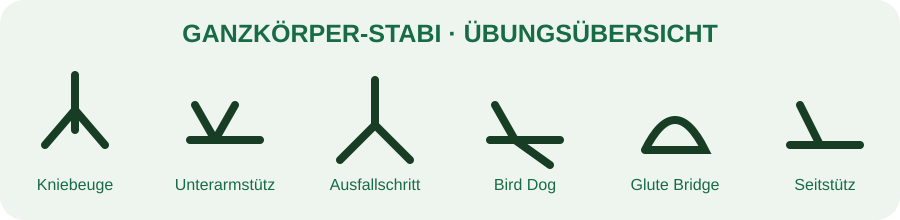

← Trainingsbibliothek
Ganzkörper-Stabi
15 Min · 2 Runden

1. Kniebeuge · 12–15 Wdh.
2. Unterarmstütz · 30 s
3. Ausfallschritt · 10 je Seite
4. Bird Dog · 10 je Seite
5. Glute Bridge · 15 Wdh.
6. Seitstütz · 20–30 s je Seite